Step Two: Edit a Molecule
1. Append a Substituent
Suppose you have a benzene molecule now, and want to append a methyl substituent to give a toluene.
Press the button "Select", and click on the black area where no atom nor bond is present. The selection becomes canceled.
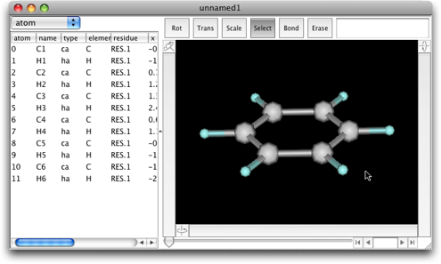
Select one of the hydrogen atoms. There are two ways to do this. You can click on the target atom, or you can drag to select atoms within a rectangular region.
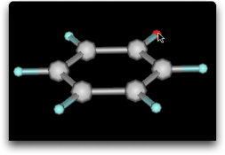 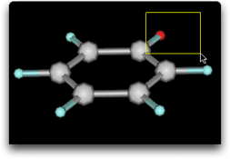
Double-click on the hydrogen atom. This time, be sure to hit the selection! Then you will see the dialog "enter formula" as shown below. Type "CH3" in the text box and hit "OK".
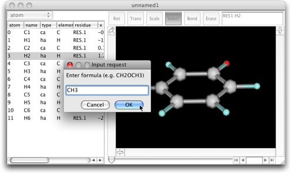
Now you get toluene.
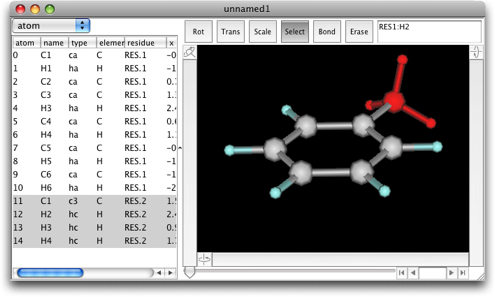
You want to save the result to a file. Select "Save as..." from the File menu, choose the file format, enter the filename, and hit "Save".
The "native" file format in Molby is "mbsf", i.e. Molby Structure File. The mbsf format is a private format with no compatibility with any existing file format for chemistry. Nevertheless, it is a plain text file that is reasonably compact and easy to read. Unless you have a particular reason to choose other formats, it is recommended that you save the structues as a "mbsf" file.
2. Manipulate Molecular Fragments
After building a molecule, you may want to move some part of a molecule. Here are examples how you can do it.
Select the methyl group of the toluene, if you have not done so yet (Tip: you can add to the current selection by shift-clicking). Press the left rotation bar (marked "3" in the previous page), and drag up and down. You will see the methyl group rotates to the right and left.
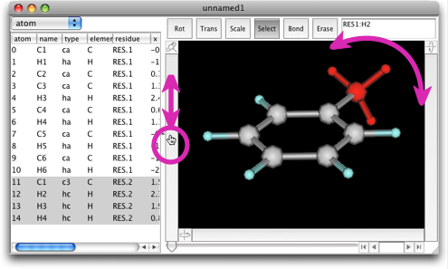
The same manipulation can be achieved by selecting one bond and dragging the left rotation bar. In this case, you can also rotate the benzene ring (with the methyl group fixed) by pressing Option (Mac) or Alt (Win) key when dragging.
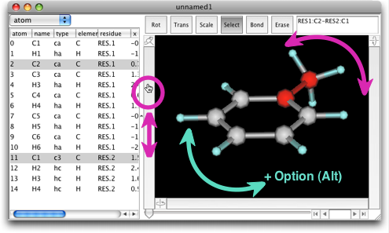
The selected atoms can be dragged to give a translational move. Use this feature with care, because it may result in a chemically unnatural structure.
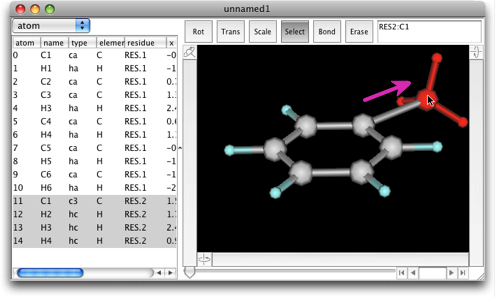
3. Adding and Deleting Atoms
We have already learned one way to add atoms: double-clicking on the selected part of the molecule (or on the black area where nothing is present), and type-in the formula. Actually, this is the most convenient way to add atoms in Molby. However, there are also other ways to add atoms.
Look at our familiar toluene molecule. Suppose we want to convert it to indane.
 indane
indane
Rotate the molecule so that its orientation matches the chemical structure. We will start from C3, add two carbons, and then close the ring.
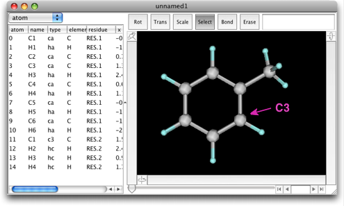
Press the "Erase" button above the black area. Click on the "H3" hydrogen. The hydrogen atom and the bond between C3 and H3 disappear.
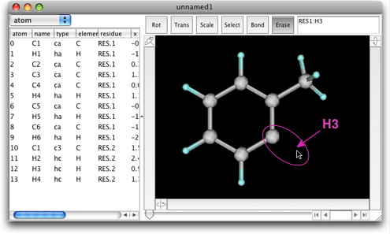
Press the "Bond" button. Drag from the C3 atom to the right-bottom, and release the mouse button. A new atom and a bond to C3 are created. Drag from the new atom to the right-up, and another atom and bond are created.
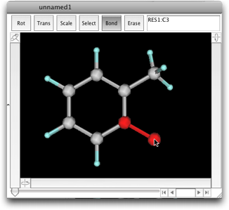 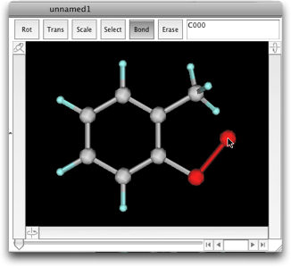
Press the "Erase" button again, and erase one hydrogen from the methyl group. Press the "Select" button, select the benzene-methylene bond, and rotate the methylene group as appropriate for the five-membered ring, by use of the left rotation bar.
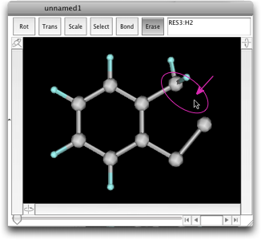 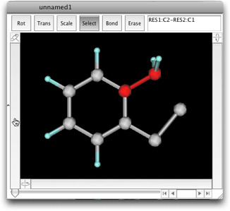
Now you can close the ring. Press the "Bond" button, and drag from the methylene carbon. When the mouse cursor comes close enough to the target carbon, the new atom will snap to the target and make a new bond. Then release the mouse button.
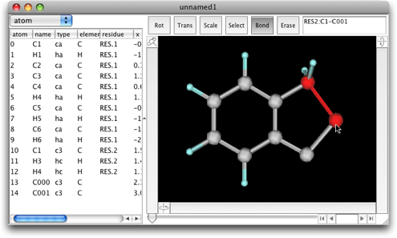
Finally, you want to add hydrogens to the newly created carbons. Press the "Select" button, and select these two carbons. Go to the "Edit" menu, and select the "Add Hydrogen" -> "Tetrahedral sp3" menu command.
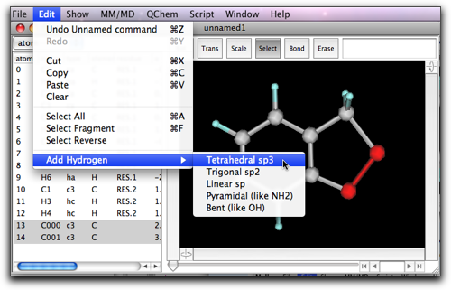
Here is the result.
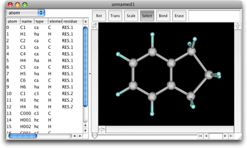
A similar result can be achieved by selecting the hydrogen ortho to the methyl group, double-click it, type "CH2CH3" in, erase one hydrogen atom from each of the methyl groups, and make a bond. This is better because the newly created methylenes have reasonable bond lengths and angles as methylene groups. The above example is just for explanation of the editing features.
第二段階：分子を編集する
1. 置換基をつける
ベンゼン分子があり、これにメチル基をつけてトルエンを作りたいとします。
"Select"ボタンを押して、編集エリアの原子や結合がないところをクリックします。選択が解除され、分子の表示が赤から原子ごとの色に変わります。
水素原子の一つを選択します。やり方は二つあります。選択したい原子をクリックするか、またはドラッグで現れる四角い領域の中の原子を選択します。
水素原子の上でダブルクリックします。このとき、選択部分の上でダブルクリックするように注意してください。"Enter formula"というダイアログが出てきます。"CH3"と入力し、"OK"を押します。
トルエンができました。
ファイルに保存しておきたい時は、通常通り File メニューから "Save as..." を選び、ファイルフォーマットを選び、ファイル名をタイプして "Save" を押します。
Molby の標準ファイルフォーマットは "mbsf" (Molby Structure File) です。Mbsf フォーマットは独自のもので、既存の化学ファイルフォーマットとは互換性がありません。しかし、mbsfはテキストファイルであり、比較的コンパクトで、読みやすいものです。他のフォーマットで保存する積極的な理由がない場合は、"mbsf"フォーマットで保存しておくことをおすすめします。
2. 分子の一部を操作する
分子を組み立てたら、その一部を動かしたくなることがあります。ここでは、そのやり方の例を示します。
トルエンのメチル基を選択します（コツ：シフトキーを押しながらクリックすると、現在の選択範囲に原子を付け加えることができます）。左の回転バー（前ページで③と書かれていたもの）でマウスボタンを押し、上下にドラッグしてください。メチル基が右左に回転するのがわかります。
同じ操作は、結合を１つ選択して左の回転バーをドラッグしてもできます。この場合、メチル基を固定してベンゼン環の方を回すこともできます。ドラッグの時にOptionキー(Mac)、Altキー(Win)を押してください。
選択した原子をドラッグすると平行移動できます。化学的に不自然な構造になりますので、注意が必要です。
3. 原子を追加する・削除する
原子を追加する方法はすでに一つ説明しました。選択部分または編集エリアの何もないところをダブルクリックして、構造式をタイプする方法です。実際、Molbyで原子を追加するにはこれが最も便利です。しかし、他の方法もありますので、それを紹介します。
先ほどのトルエン分子を使います。これをインダンに変えたいとします。
インダン
分子を回転させて、化学構造式と同じ向きになるようにします。C3から始めて、炭素原子を２つ追加し、環を閉じることにします。
編集エリアの上の"Erase"ボタンを押します。"H3"水素をクリックします。この水素原子と、C3-H3の結合が消えます。
"Bond"ボタンを押します。C3原子から右下にドラッグし、マウスボタンを離します。新しい原子と、その原子とC3の間の結合が新しく作られます。新しい原子から右上にドラッグすると、もう一つの原子と結合が作られます。
"Erase"ボタンをもう一度押して、メチル基の原子を一つ消します。"Select"ボタンを押して、ベンゼン環とメチレン炭素（今水素原子を一つ消したところ）の間の結合を選択します。左の回転バーを使って、五員環に適切な向きになるようにメチレン基を回転させます。
環を閉じます。"Bond"ボタンを押し、メチレン炭素原子から右下の炭素原子へドラッグします。マウスカーソルが目標の炭素原子に近づくと、ドラッグしてできた結合が炭素原子にくっつきます。ここでマウスボタンを離します。
最後に、新しく作った二つの炭素原子に水素原子を付加します。"Select"ボタンを押して、マウスを使って二つの炭素原子を選択します。"Edit"メニューから、"Add Hydrogen"->"Tetrahedral sp3"コマンドを実行します。
結果はこのようになります。
トルエンからインダンは次のような操作でも作ることができます。メチル基のオルト位の水素原子を選択、ダブルクリック、ダイアログが出たら"CH2CH3"と入力、二つのメチル基からそれぞれ水素原子を一つ削除、結合回転で向きを調整、結合を作成。この方法の方が、新しく作ったメチレン基の結合距離・結合角が正しくなるため、よりよい結果になります。上の例は、編集操作の説明のためのものと考えてください。


 2,2'-dimethoxybiphenyl
2,2'-dimethoxybiphenyl